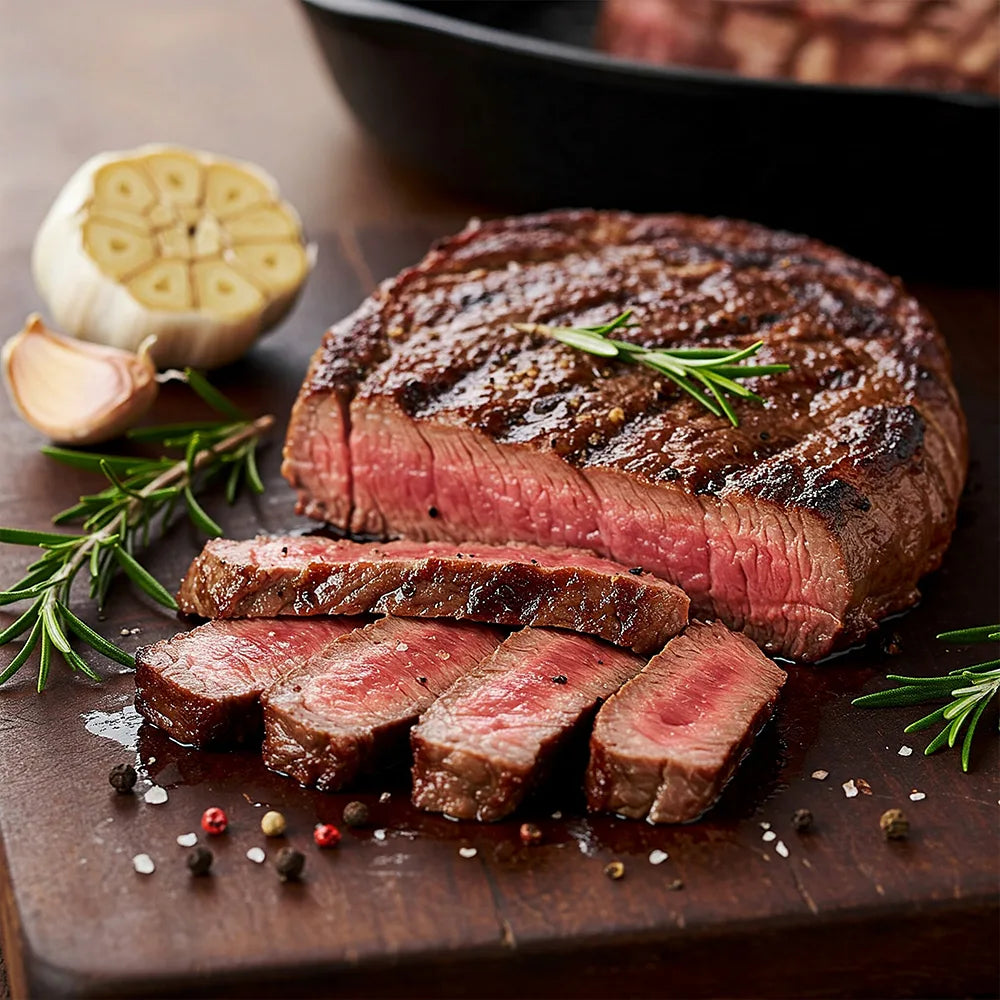

Home
Chicken Teriyaki Recipe

Description
This is my favorite way to cook a New York strip in an air fryer. I hope you enjoy!
Ingredients
- A New York Strip
- Various spices of your choosing.
Steps
- Put spices on the steak (duh)
- Throw that jawn in the air fryer for like 3-4 minutes at 350-400 degrees.
- Flip her over and let her cook for a couple more minutes.
- Pull her out and let her rest for a few minutes before eating her up.